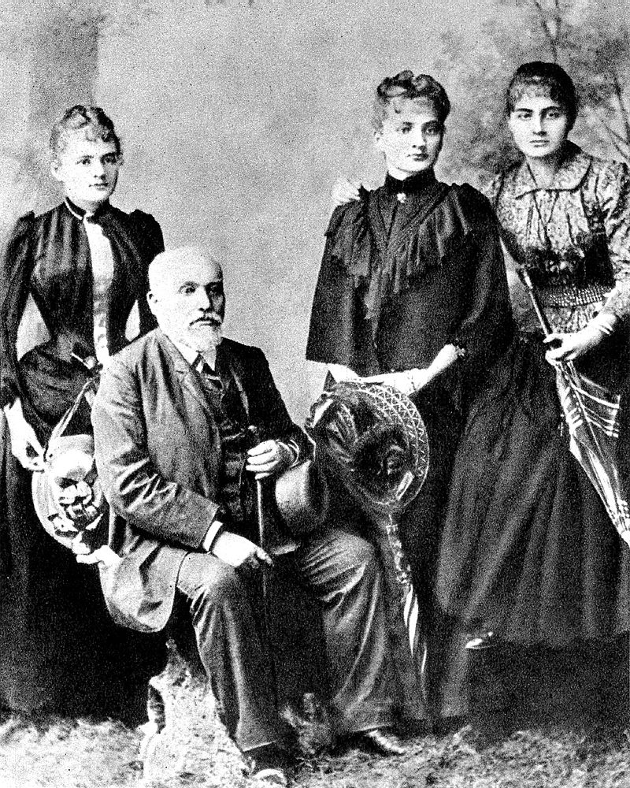

Biographie de Marie Curie
Origines familiales et formation
S alomea Skłodowska naît à Varsovie, capitale du royaume de Pologne, fondé en 1815 par le congrès de Vienne au profit du tsar Alexandre et étroitement lié à l'Empire russe. À cette époque, à la suite de l'insurrection polonaise de 1861-1864, la Russie procède au transfert des ministères polonais4 de Varsovie à Saint-Pétersbourg et lance une politique de russification du royaume5.
Son père, issu d'une famille noble (clan Dołęga), est professeur de mathématiques et de physique ; sa mère est institutrice. Avant Marie, ils ont eu trois filles et un fils : Zofia (1861-1876), Józef (1863-1937), Bronisława (Bronia) (1865-1939)6 et Helena (1866-1961).
En l’espace de deux années, elle perd sa sœur Zofia, morte du typhus en janvier 1876, et sa mère, qui succombe à la tuberculose le 9 mai 1878. Elle se réfugie alors dans les études où elle excelle dans toutes les matières, et où la note maximale lui est accordée7. Elle obtient ainsi son diplôme de fin d’études secondaires avec la médaille d’or en 1883. Elle adhère à la doctrine positiviste d'Auguste Comte et rejoint l'Université volante, organisation clandestine qui pratique l'éducation des masses en polonais, en réaction à la politique de russification.
Marie Curie souhaiterait faire des études supérieures, mais cela est interdit aux femmes dans son pays natal. Lorsque sa sœur Bronia part à Paris étudier la médecine, Maria s'engage comme gouvernante dans une famille de province pour financer un projet similaire. À ce moment-là, elle a l'intention de revenir ensuite en Pologne pour enseigner, éventuellement dans le cadre de l'Université volante. Au bout de trois ans, elle rentre à Varsovie, où un cousin lui permet d'entrer dans un laboratoire8.
Rencontre et mariage avec Pierre Curie

Au début de 1894, Marie Skłodowska travaille dans le laboratoire de Gabriel Lippmann où elle est chargée d’étudier les propriétés magnétiques des aciers pour la Société d’encouragement pour l’industrie nationale. Malgré un environnement de travail austère, elle cherche des moyens pour poursuivre efficacement ses recherches. C’est dans ce contexte que le professeur Józef Kowalski de l’université de Fribourg la présente à Pierre Curie, responsable des travaux de physique à l’École municipale de physique et de chimie industrielles, qui s’intéresse aussi au magnétisme. Leur collaboration professionnelle évolue vers une attirance réciproque.
En 1895, Marie retourne à Varsovie pour se rapprocher de sa famille, enseigner et contribuer à l’émancipation de la Pologne. Cependant, sur la proposition de mariage de Pierre Curie, elle revient à Paris et ils se marient à Sceaux le 26 juillet 1895.
L’année suivante, elle prépare son agrégation pour enseigner les mathématiques aux jeunes filles tout en suivant les cours de Marcel Brillouin et en menant ses premières recherches sur les aciers. En 1896, elle obtient la première place à l’agrégation. Toutefois, elle choisit de ne pas enseigner au secondaire, préférant se consacrer à une thèse de doctorat.
Le 12 septembre 1897, elle met au monde sa première fille, prénommée Irène
La mort de Marie Curie
Curie a visité la Pologne pour la dernière fois au début de 1934. Quelques mois plus tard, le 4 juillet 1934, elle est décédée à l’âge de 66 ans au sanatorium de Sancellemoz à Passy, en Haute-Savoie, d’une anémie aplastique que l’on pense avoir été contractée suite à son exposition prolongée aux radiations, endommageant sa moelle osseuse.
Les effets nocifs des radiations ionisantes n’étaient pas connus à l’époque de ses travaux, qui avaient été menés sans les mesures de sécurité développées par la suite. Elle avait transporté des tubes à essai contenant des isotopes radioactifs dans sa poche, et les avait rangés dans le tiroir de son bureau, remarquant la faible lumière que les substances émettaient dans le noir. Curie a également été exposée aux rayons X provenant d’équipements non protégés alors qu’elle servait en tant que radiologue dans des hôpitaux de campagne pendant la Première Guerre mondiale. Lorsque le corps de Curie a été exhumé en 1995, l’Office de Protection contre les Rayonnements Ionisants (OPRI) a “conclu qu’elle n’aurait pas pu être exposée à des niveaux létaux de radium de son vivant”. Ils ont souligné que le radium ne présente un risque que s’il est ingéré, et ont spéculé que sa maladie était plus probablement due à son utilisation de la radiographie pendant la Première Guerre mondiale
Elle a été inhumée au cimetière de Sceaux, aux côtés de son mari Pierre. Soixante ans plus tard, en 1995, en l’honneur de leurs réalisations, les restes des deux ont été transférés au Panthéon de Paris. Leurs restes ont été scellés dans une doublure de plomb en raison de la radioactivité. Elle est devenue la deuxième femme à être inhumée au Panthéon (après Sophie Berthelot) et la première femme à être honorée d’une inhumation au Panthéon pour ses propres mérites.
En raison de leur niveau de contamination radioactive, ses papiers des années 1890 sont considérés comme trop dangereux pour être manipulés. Même ses livres de cuisine sont très radioactifs. Ses papiers sont conservés dans des boîtes doublées de plomb, et ceux qui souhaitent les consulter doivent porter des vêtements de protection. Dans sa dernière année, elle a travaillé sur un livre, Radioacti